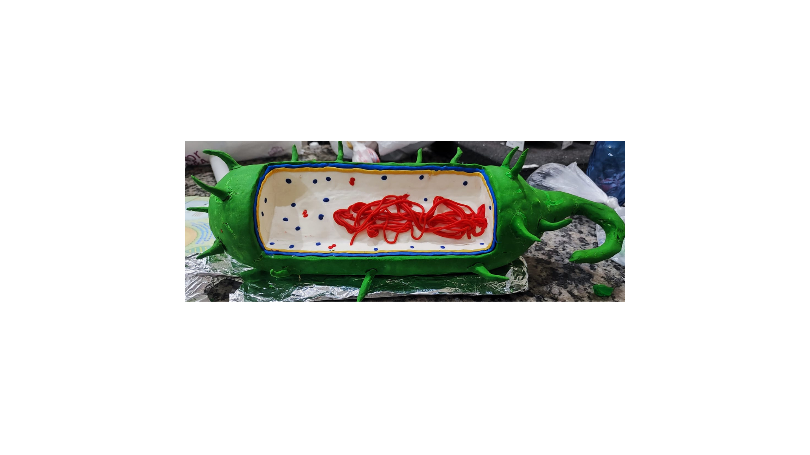
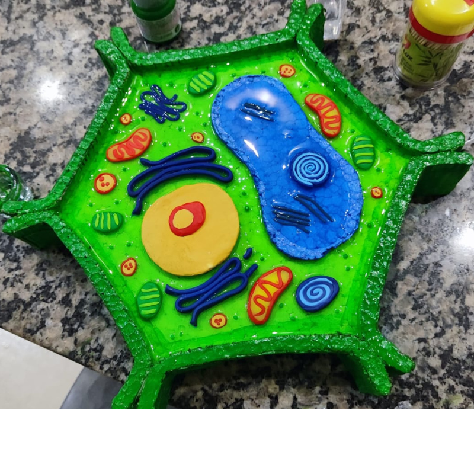

O Estudo da Célula
A Citologia (ou Biologia Celular) é o ramo da Biologia que estuda as células, que são as unidades fundamentais da vida. Ela investiga a estrutura, o metabolismo, as funções e o ciclo de vida das células. A palavra "citologia" vem do grego kytos (célula) e logos (estudo).
As células são as menores unidades vivas capazes de realizar todas as funções necessárias à vida, incluindo nutrição, respiração, excreção, crescimento e reprodução. Todos os organismos vivos, desde bactérias unicelulares até seres humanos complexos, são compostos por células.
Teoria Celular
A Teoria Celular é um dos pilares da Biologia moderna e foi desenvolvida ao longo do século XIX por diversos cientistas. Os principais postulados são:
- Todos os seres vivos são formados por células (e seus produtos, como a matriz extracelular).
- A célula é a unidade morfológica e fisiológica dos seres vivos, ou seja, é a menor unidade estrutural e funcional.
- Todas as células se originam de células preexistentes através da divisão celular (mitose ou meiose).
- As células contêm informações hereditárias (DNA) que são transmitidas durante a divisão celular.
Os principais cientistas que contribuíram para a Teoria Celular foram Robert Hooke (1665, observou células mortas de cortiça), Matthias Schleiden (1838, propôs que todas as plantas são formadas por células), Theodor Schwann (1839, estendeu a teoria para animais) e Rudolf Virchow (1855, afirmou que toda célula provém de outra célula).
Tipos de Células
Existem dois tipos principais de células, classificadas de acordo com a presença ou ausência de núcleo definido:
| Característica | Célula Procarionte | Célula Eucarionte |
|---|---|---|
| Núcleo | Ausente (material genético disperso no citoplasma - nucleoide) | Presente (material genético envolto por membrana nuclear) |
| Organelas Membranosas | Ausentes | Presentes (Mitocôndrias, Complexo de Golgi, Retículo Endoplasmático, etc.) |
| Tamanho | Menor (1-10 μm) | Maior (10-100 μm) |
| DNA | Circular, sem histonas | Linear, associado a histonas |
| Ribossomos | Menores (70S) | Maiores (80S) |
| Divisão Celular | Fissão binária | Mitose e Meiose |
| Exemplos | Bactérias e Arqueas | Animais, Plantas, Fungos e Protistas |
🧬 Modelos Tridimensionais de Células
Aqui estão os modelos que mostram a estrutura das células:
Célula Procarionte
Modelo mostrando a estrutura de uma célula procarionte (bactéria), com destaque para o nucleoide contendo DNA circular.
Célula Vegetal Eucarionte
Modelo mostrando a estrutura de uma célula vegetal eucarionte, com destaque para o núcleo, cloroplastos e parede celular.
Estrutura Detalhada da Célula Eucarionte
Diagrama detalhado de uma célula eucarionte mostrando todas as organelas e suas localizações.
Representação tridimensional de uma célula eucariota com suas principais estruturas.

Citoplasma e organelas celulares em detalhe, mostrando suas formas e posições relativas.
Estruturas Básicas da Célula Eucarionte
A célula eucarionte é composta por três partes principais:
- Membrana Plasmática: Envolve a célula, controlando a entrada e saída de substâncias através da permeabilidade seletiva. É composta principalmente por uma bicamada lipídica com proteínas inseridas (modelo do mosaico fluido).
- Citoplasma: Região entre a membrana plasmática e o núcleo, onde estão as organelas e o citosol (líquido gelatinoso rico em água, íons e moléculas orgânicas). É o local onde ocorrem muitas reações metabólicas.
- Núcleo: Contém o material genético (DNA) organizado em cromossomos e controla as atividades celulares através da expressão gênica. É delimitado pela carioteca (envelope nuclear).
Principais Organelas e Suas Funções
| Organela | Função Principal | Características |
|---|---|---|
| Mitocôndrias | Respiração celular e produção de energia (ATP) | Possui DNA próprio, membrana dupla, cristas mitocondriais |
| Ribossomos | Síntese de proteínas | Livres no citoplasma ou aderidos ao retículo endoplasmático |
| Retículo Endoplasmático Rugoso | Síntese e transporte de proteínas | Possui ribossomos aderidos à sua superfície |
| Retículo Endoplasmático Liso | Síntese de lipídios e desintoxicação | Sem ribossomos, membranas tubulares |
| Complexo de Golgi | Modificação, armazenamento e secreção de substâncias | Conjunto de cisternas achatadas, forma vesículas |
| Lisossomos | Digestão intracelular | Contém enzimas digestivas (hidrolases ácidas) |
| Peroxissomos | Oxidação de ácidos graxos, degradação de H₂O₂ | Contém enzimas oxidativas, incluindo catalase |
| Centríolos | Organização do fuso mitótico na divisão celular | Formados por microtúbulos, ausentes em plantas superiores |
| Vacúolos (Vegetal) | Armazenamento de água e substâncias, regulação osmótica | Grande vacúolo central em células vegetais maduras |
| Cloroplastos (Vegetal) | Realização da fotossíntese | Possui DNA próprio, membrana dupla, tilacoides com clorofila |
| Parede Celular (Vegetal) | Proteção e sustentação | Composta principalmente de celulose |
Mitocôndrias: A Usina de Energia da Célula
Estrutura detalhada da mitocôndria mostrando membranas externa e interna, cristas e matriz mitocondrial.
Ilustração científica da mitocôndria com suas principais estruturas identificadas.
As mitocôndrias são organelas responsáveis pela respiração celular aeróbica, processo que converte glicose e oxigênio em ATP (adenosina trifosfato), a principal moeda energética da célula. Elas possuem duas membranas: a externa é lisa e a interna forma dobras chamadas cristas mitocondriais, que aumentam a superfície para as reações químicas.
As mitocôndrias possuem seu próprio DNA circular (mtDNA) e ribossomos, o que sugere que elas se originaram de bactérias ancestrais que foram incorporadas por células eucarióticas primitivas (teoria endossimbiótica). A respiração celular ocorre em três etapas principais: glicólise (no citoplasma), ciclo de Krebs (na matriz mitocondrial) e cadeia transportadora de elétrons (nas cristas mitocondriais).
Membrana Plasmática: Modelo do Mosaico Fluido
A membrana plasmática é uma estrutura dinâmica e fluida composta principalmente por fosfolipídios organizados em uma bicamada. Segundo o modelo do mosaico fluido proposto por Singer e Nicolson (1972), a membrana é como um mosaico onde proteínas estão inseridas ou associadas à bicamada lipídica, podendo se mover lateralmente.
Componentes da membrana plasmática:
- Fosfolipídios: Moléculas anfipáticas (cabeça hidrofílica e cauda hidrofóbica) que formam a bicamada.
- Proteínas: Integrais (atravessam a membrana) e periféricas (associadas à superfície). Atuam como canais, transportadores, receptores e enzimas.
- Colesterol: Presente em células animais, regula a fluidez da membrana.
- Carboidratos: Ligados a lipídios (glicolipídios) ou proteínas (glicoproteínas), formam o glicocálix, importante para reconhecimento celular.
Funções da membrana plasmática:
- Permeabilidade seletiva: controla a entrada e saída de substâncias
- Reconhecimento celular através do glicocálix
- Adesão celular através de proteínas especializadas
- Comunicação celular através de receptores
- Transporte de substâncias (passivo e ativo)
Transporte através da Membrana
| Tipo de Transporte | Características | Exemplos |
|---|---|---|
| Difusão Simples | Passivo, a favor do gradiente, sem gasto de energia | O₂, CO₂, moléculas lipofílicas |
| Difusão Facilitada | Passivo, através de proteínas carreadoras ou canais | Glicose, aminoácidos, íons |
| Osmose | Difusão de água através de membrana semipermeável | Água (H₂O) |
| Transporte Ativo | Contra o gradiente, com gasto de ATP | Bomba de Na⁺/K⁺, bomba de Ca²⁺ |
| Endocitose | Englobamento de partículas para dentro da célula | Fagocitose, pinocitose, endocitose mediada |
| Exocitose | Liberação de substâncias para fora da célula | Secreção de hormônios, neurotransmissores |
Núcleo Celular: Centro de Controle
O núcleo é a maior organela da célula eucarionte e contém a maior parte do material genético (DNA). Ele é delimitado pela carioteca ou envelope nuclear, uma membrana dupla com poros nucleares que permitem a comunicação entre o núcleo e o citoplasma.
Componentes do núcleo:
- Carioteca: Membrana dupla com poros que regulam a passagem de moléculas.
- Nucleoplasma (carioplasma): Fluido gelatinoso que preenche o interior do núcleo.
- Cromatina: DNA associado a proteínas histonas, forma os cromossomos durante a divisão celular.
- Nucléolo: Região densa onde ocorre a síntese de RNA ribossômico (rRNA) e a montagem dos ribossomos.
O núcleo controla as atividades celulares através da expressão gênica, processo pelo qual a informação do DNA é transcrita em RNA mensageiro (mRNA) e depois traduzida em proteínas no citoplasma. Durante a divisão celular, a cromatina se condensa formando cromossomos visíveis ao microscópio.
DNA e Cromossomos
Estrutura da dupla hélice do DNA descoberta por Watson e Crick.
Modelo detalhado da molécula de DNA mostrando as bases nitrogenadas.

Estrutura completa de um cromossomo com seus componentes identificados.
O DNA (ácido desoxirribonucleico) é uma molécula em forma de dupla hélice composta por nucleotídeos. Cada nucleotídeo contém um açúcar (desoxirribose), um grupo fosfato e uma base nitrogenada. As bases nitrogenadas são: Adenina (A), Timina (T), Citosina (C) e Guanina (G). A adenina pareia com timina (A-T) e a citosina com guanina (C-G) através de pontes de hidrogênio.
Os cromossomos são estruturas formadas pela condensação da cromatina durante a divisão celular. Cada cromossomo é composto por uma molécula de DNA altamente compactada associada a proteínas histonas. Os seres humanos possuem 46 cromossomos (23 pares) em suas células somáticas. O cromossomo condensado possui uma região estreita chamada centrômero, que divide o cromossomo em dois braços, e nas extremidades estão os telômeros, que protegem o DNA.
Divisão Celular: Mitose e Meiose
Comparação entre os processos de mitose e meiose.
Etapas detalhadas da mitose e meiose com ilustrações dos cromossomos.
Mitose
A mitose é um tipo de divisão celular que produz duas células-filhas geneticamente idênticas à célula-mãe. É importante para o crescimento, regeneração de tecidos e reprodução assexuada. A mitose é dividida em fases:
- Prófase: Condensação dos cromossomos, desaparecimento do nucléolo, formação do fuso mitótico.
- Metáfase: Cromossomos alinhados na placa equatorial da célula.
- Anáfase: Separação das cromátides-irmãs, que migram para polos opostos.
- Telófase: Descondensação dos cromossomos, reaparecimento do nucléolo, divisão do citoplasma (citocinese).
Meiose
A meiose é um tipo de divisão celular que produz quatro células-filhas com metade do número de cromossomos da célula-mãe. É essencial para a formação de gametas (óvulos e espermatozoides) e garante a variabilidade genética. A meiose ocorre em duas etapas:
- Meiose I (Reducional): Separação dos cromossomos homólogos, redução do número de cromossomos pela metade.
- Meiose II (Equacional): Separação das cromátides-irmãs, semelhante à mitose.
Durante a meiose I ocorre o crossing-over (permutação ou recombinação genética) na prófase I, onde cromossomos homólogos trocam segmentos de DNA, aumentando a variabilidade genética. A distribuição independente dos cromossomos durante a metáfase I também contribui para a diversidade.
Ciclo Celular
O ciclo celular é o conjunto de eventos que ocorrem desde a formação de uma célula até sua própria divisão. É dividido em duas grandes fases: Interfase e Fase Mitótica (Mitose + Citocinese).
| Fase | Eventos Principais | Duração Relativa |
|---|---|---|
| G1 (Gap 1) | Crescimento celular, síntese de proteínas e organelas | Variável (mais longa) |
| S (Síntese) | Duplicação do DNA (replicação) | 6-8 horas |
| G2 (Gap 2) | Preparação para divisão, síntese de proteínas do fuso | 2-5 horas |
| Mitose | Divisão do núcleo (prófase, metáfase, anáfase, telófase) | 1-2 horas |
| Citocinese | Divisão do citoplasma | Variável |
| G0 (Gap 0) | Estado de quiescência, células que não se dividem | Indefinida |
O ciclo celular é regulado por ciclinas e quinases dependentes de ciclina (CDKs), que controlam a progressão de uma fase para outra. Existem pontos de checagem (checkpoints) que verificam se a célula está pronta para avançar, prevenindo erros que podem levar ao câncer.
Metabolismo Celular
O metabolismo é o conjunto de todas as reações químicas que ocorrem na célula. É dividido em:
- Anabolismo: Reações de síntese que constroem moléculas complexas a partir de moléculas simples, com gasto de energia (endergônicas). Exemplo: síntese de proteínas, fotossíntese.
- Catabolismo: Reações de degradação que quebram moléculas complexas em moléculas simples, liberando energia (exergônicas). Exemplo: respiração celular, digestão.
Respiração Celular
A respiração celular é o processo pelo qual as células obtêm energia a partir da quebra de moléculas orgânicas, principalmente glicose, na presença de oxigênio. A equação geral é:
C₆H₁₂O₆ + 6O₂ → 6CO₂ + 6H₂O + ATP
A respiração celular aeróbica ocorre em três etapas:
- Glicólise: Ocorre no citoplasma, quebra da glicose (6C) em duas moléculas de piruvato (3C), produzindo 2 ATP e 2 NADH.
- Ciclo de Krebs (Ciclo do Ácido Cítrico): Ocorre na matriz mitocondrial, oxidação completa do piruvato, produzindo CO₂, ATP, NADH e FADH₂.
- Cadeia Transportadora de Elétrons (Fosforilação Oxidativa): Ocorre nas cristas mitocondriais, transferência de elétrons do NADH e FADH₂, produzindo grande quantidade de ATP (cerca de 32-34 ATP).
O rendimento total da respiração aeróbica é de aproximadamente 36-38 moléculas de ATP por molécula de glicose. Na ausência de oxigênio, as células podem realizar fermentação (alcoólica ou lática), que produz apenas 2 ATP por glicose.
📚 Questões de Vestibulares
QUESTÃO 01 (Famerp 2023)
Em uma espermátide, todas as membranas do complexo golgiense foram marcadas com um elemento químico fluorescente. Depois de alguns minutos, a espermátide sofreu diferenciação celular e a célula resultante foi analisada ao microscópio. Verificou-se que a marcação fluorescente ocorria:
Ver Resposta
Resposta: B
O acrossomo é formado a partir do complexo de Golgi durante a diferenciação do espermatozoide. Portanto, as membranas marcadas do complexo de Golgi estariam presentes no acrossomo da célula resultante.
QUESTÃO 02
Qual organela é responsável pela produção de energia (ATP) na célula?
Ver Resposta
Resposta: B
A mitocôndria é a organela responsável pela respiração celular, processo que produz a maior parte da energia (ATP) utilizada pela célula.
QUESTÃO 03
Qual é a principal diferença entre uma célula procarionte e uma célula eucarionte?
Ver Resposta
Resposta: B
A principal diferença é que as células eucariontes possuem um núcleo definido (envolvido por membrana nuclear) e organelas membranosas, enquanto as procariontes não possuem essas estruturas.
QUESTÃO 04 (ENEM)
Durante a respiração celular, a glicose é degradada e a energia liberada é armazenada em moléculas de ATP. Em qual organela ocorre a maior parte da produção de ATP durante a respiração aeróbica?
Ver Resposta
Resposta: C
A mitocôndria é o local onde ocorre a maior parte da respiração celular aeróbica, especialmente o Ciclo de Krebs e a cadeia transportadora de elétrons, que produzem a maior quantidade de ATP.
QUESTÃO 05
O processo de divisão celular que resulta em quatro células-filhas com metade do número de cromossomos da célula-mãe é chamado de:
Ver Resposta
Resposta: B
A meiose é o processo de divisão celular que produz quatro células haploides (com metade dos cromossomos) a partir de uma célula diploide, sendo essencial para a formação de gametas.
QUESTÃO 06
Qual estrutura celular é responsável pela síntese de proteínas?
Ver Resposta
Resposta: B
Os ribossomos são as estruturas responsáveis pela síntese de proteínas através da tradução do RNA mensageiro.
QUESTÃO 07 (FUVEST)
A membrana plasmática é uma estrutura fundamental para a célula. Qual modelo descreve a estrutura da membrana plasmática, enfatizando sua fluidez e a presença de proteínas inseridas na bicamada lipídica?
Ver Resposta
Resposta: B
O Modelo do Mosaico Fluido, proposto por Singer e Nicholson, descreve a membrana plasmática como uma bicamada lipídica fluida com proteínas dispersas e móveis.
QUESTÃO 08 (UNESP)
Qual organela é responsável pela digestão intracelular e autofagia, contendo enzimas hidrolíticas em seu interior?
Ver Resposta
Resposta: C
Os lisossomos são vesículas que contêm enzimas digestivas (hidrolases ácidas) e são responsáveis pela digestão de partículas capturadas (heterofagia) ou de componentes celulares velhos (autofagia).
QUESTÃO 09 (UERJ)
O Retículo Endoplasmático Liso (REL) é abundante em células do fígado. Qual é a principal função do REL que justifica sua abundância neste órgão?
Ver Resposta
Resposta: C
O REL é responsável pela síntese de lipídios e, principalmente, pela desintoxicação do organismo, degradando substâncias tóxicas como álcool e medicamentos, função essencial no fígado.
QUESTÃO 10 (UFMG)
Qual processo de transporte através da membrana plasmática permite a passagem de moléculas pequenas (como O₂ e CO₂) sem gasto de energia e a favor do gradiente de concentração?
Ver Resposta
Resposta: D
A difusão simples é um transporte passivo (sem gasto de ATP) que move substâncias (como gases e moléculas lipossolúveis) diretamente através da bicamada lipídica, do meio mais concentrado para o menos concentrado.
Recursos Adicionais
Vídeo Aulas

Escaneie para acessar vídeo aulas sobre Citologia
Jogos e Conteúdo Interativo

Escaneie para acessar jogos e conteúdos educativos interativos